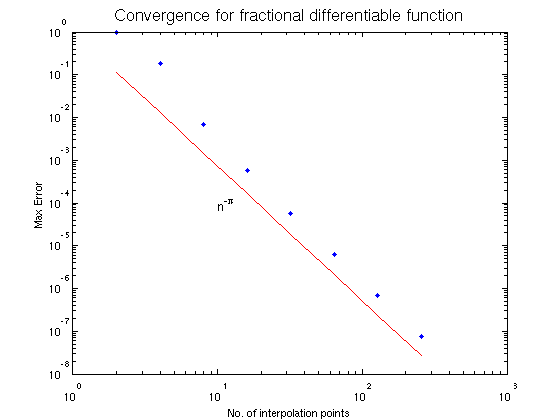
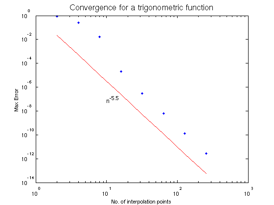
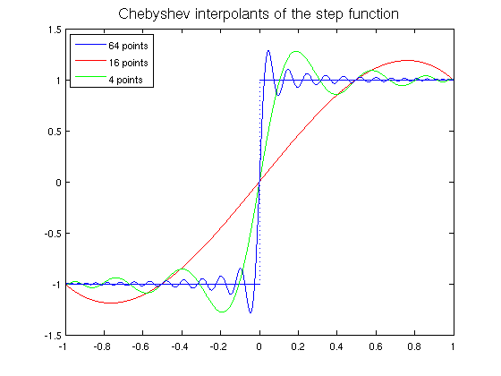

Convergence rates for interpolating functions
Alex Townsend, October 2010
Contents
(Chebfun example approx/Convergence.m)
The smoother a function, the faster its approximants converge. Usually numerical examples only consider functions which are k times differentiable for some integer k. Here we look at some different examples when using polynomial interpolants at the Chebyshev points of the second kind called Chebyshev interpolants.
Fractional Example
First we consider the function abs(x)^pi
LW = 'LineWidth';FS = 'FontSize'; MS = 'MarkerSize'; x=chebfun('x'); nn=2*round(2.^(0:7)); ee=0*nn; f=abs(x).^pi; for j=1:length(nn) fn=chebfun(f,nn(j)); ee(j)=norm(f-fn,inf); end loglog(nn,nn.^-pi,'r'); hold on; loglog(nn,ee,'.',MS,16); hold off; xlabel('No. of interpolation points'); ylabel('Max Error'); text(10,1e-4,'n^{-\pi}',FS,12); title('Convergence for fractional differentiable function',FS,16);
Thus here the fractional differentiability of a function seems important in explaining the convergence rate.
A Trigonometric Example
Next we replace the function abs(x)^pi by the function sin(abs(x)^5.5)
f=sin(abs(x).^5.5); for j=1:length(nn) fn=chebfun(f,nn(j)); ee(j)=norm(f-fn,inf); end loglog(nn,nn.^-5.5,'r'); hold on; loglog(nn,ee,'.',MS,16); xlabel('No. of interpolation points'); ylabel('Max Error'); text(10,1e-7,'n^{-5.5}',FS,12); title('Convergence for a trigonometric function',FS,16); hold off;
Once again fractional differentiability is important for the convergence rate.
A Discontinuous Function and the Gibbs Phenomenon
There can be no convergence in the maximum norm to a discontinuous function by polynomials, and indeed there is always an overshoot near any discontinuity. This effect is the well-known Gibbs Phenomenon. However, Chebfun can split up the interval at the jump to still approximate to machine precision. Here we consider the standard step function.
f=sign(x); % Chebfun automatically uses splitting plot(f); hold on; C=eye(3); % colour matrix for j=1:3 fn=chebfun(f,2^(2*j)); plot(fn,'Color',C(:,j)); hold on; end legend('64 points','16 points','4 points','Location','NorthWest'); title('Chebyshev interpolants of the step function',FS,16);
However, without splitting there is always a large error near the discontinuity.
g=chebfun(@sign,1e4,'splitting','off'); % interpolating at 10000 points error = abs(1-g(1e-3))
error = 0.082100854630105
Here we sampled at the arbitrary point 1e-3, chosen near the discontinuity to witness the error caused by the overshoot of the Chebyshev interpolant.
Reference
L. N. Trefethen, Approximation Theory and Approximation Practice, draft book available at http://www.maths.ox.ac.uk/chebfun/ATAP/.